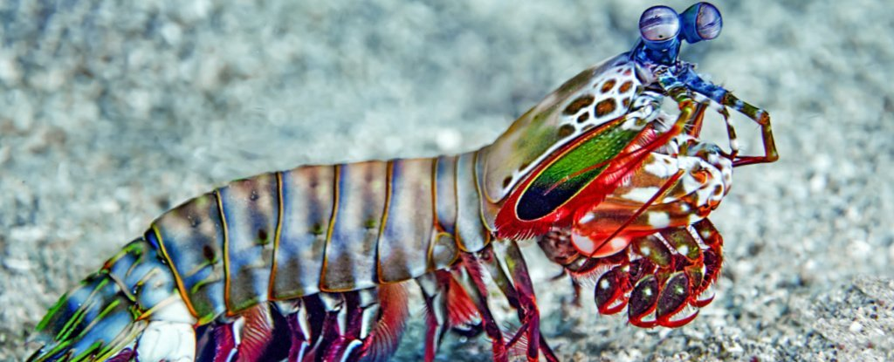
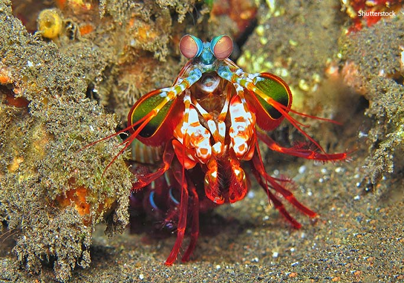

Fatos sobre o Stomatopoda
Descrição
O Stomatopoda (Odontodactylus scyllarus) é caracterizado por ser extremamente agressivo, presente há 400 milhões de anos atrás.
Atualmente, seu habitat se encontra dentro da região mostrada conforme figura abaixo:

Na tabela a seguir constam informações biológicas do animal:
| Reino | Animalia |
| Filo | Arthropoda |
| Subfilo | Crustacea |
| Classe | Malacostraca |
| Subclasse | Hoplocarida |
| Ordem | Stromatopoda |
Possuem uma visão incrível
De forma que seja possível para o ser humano ver todo o espectro de cor, nosso sistema de visão possui cones. Cone é a estrutura responsável por reconhecer cor, e o ser humano possui 3 cones, cada um sendo responsável por reconhecer:
- vermelho
- verde
- azul
Logo, todas as cores visíveis ao ser humano são resultado da combinação de cores obtidas por esses 3 tipos de cones. Bem legal, né?
Pois bem, o Stomatopoda possui não 3, nem 5, mas 16 tipos de cone, sendo capaz de reconhecer cores que estão simplesmente fora do nosso alcance!

Eles possuem um soco poderoso
O Stomatopoda possui dois apêndices frontais que são usados como mecanismo de ataque: ao se deparar com uma presa, os apêndices são alavancados, provendo como resultado um soco a 80km/h na presa, com uma aceleração comparável a uma bala disparada por revólver de calibre 22.
Seus membros são tão poderosos que os cientistas estão estudando a estrutura de suas células para desenvolver novas armaduras para as tropas de combate. A Força Aérea norte-americana “encomendou” uma pesquisa para o desenvolvimento de aeronaves militares mais resistentes com base no revestimento das patas golpeadoras do mantis. Existem estudos baseados na visão superpoderosa das tamarutacas para melhorar os componentes ópticos — como os dos leitores de CD e DVD, por exemplo — utilizados atualmente. 